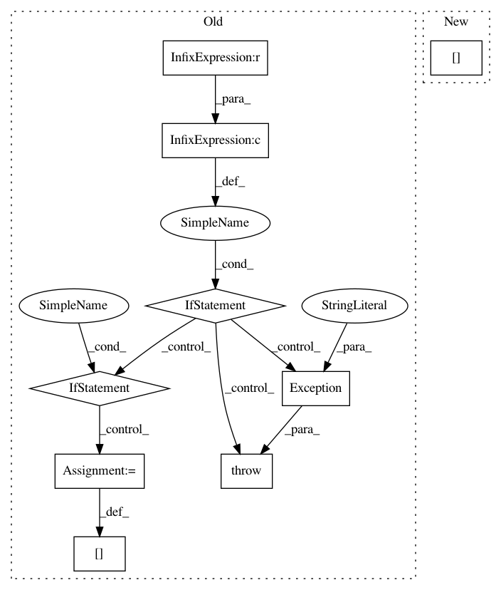

01b4ec3f531e07b8c4a32a13288c963ad8b4b843,server/website/website/db/base/parser.py,BaseParser,convert_dbms_metrics,#BaseParser#Any#Any#Any#,188
Before Change
raise Exception(
"Unknown metric type for {}: {}".format(name, metadata.metric_type))
if target_objective is not None and self.target_metric(target_objective) not in metric_data:
raise Exception("Cannot find objective function")
if target_objective is not None:
metric_data[target_objective] = metric_data[self.target_metric(target_objective)]
else:
// default
metric_data["throughput_txn_per_sec"] = \
metric_data[self.target_metric(target_objective)]
return metric_data
def extract_valid_variables(self, variables, catalog, default_value=None):
valid_variables = {}
After Change
if metadata.metric_type == MetricType.COUNTER:
assert isinstance(converted, float)
base_metric_data[name] = converted
metric_data[name] = converted / observation_time
elif metadata.metric_type == MetricType.STATISTICS:
assert isinstance(converted, float)
In pattern: SUPERPATTERN
Frequency: 3
Non-data size: 9
Instances
Project Name: cmu-db/ottertune
Commit Name: 01b4ec3f531e07b8c4a32a13288c963ad8b4b843
Time: 2019-10-14
Author: dvanaken@cs.cmu.edu
File Name: server/website/website/db/base/parser.py
Class Name: BaseParser
Method Name: convert_dbms_metrics
Project Name: cmu-db/ottertune
Commit Name: 01b4ec3f531e07b8c4a32a13288c963ad8b4b843
Time: 2019-10-14
Author: dvanaken@cs.cmu.edu
File Name: server/website/website/db/myrocks/parser.py
Class Name: MyRocksParser
Method Name: convert_dbms_metrics
Project Name: facebookresearch/Horizon
Commit Name: a666c1b9f3099199fe75bce32c228fd4c8290af4
Time: 2018-02-16
Author: jjg@fb.com
File Name: ml/rl/training/conv/discrete_action_conv_trainer.py
Class Name: DiscreteActionConvTrainer
Method Name: __init__